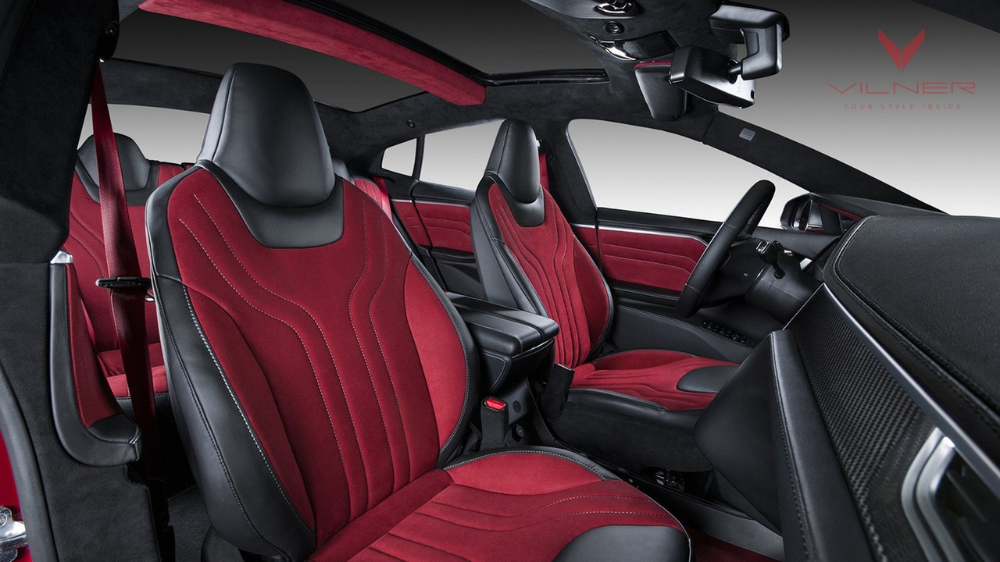

Model S - The Safest Car

The Tesla Model S is the first bespoke creation from the electric car stable of PayPal creator Elon Musk. Model S achieved the highest safety rating of any car ever tested, and set a record for the lowest probability of occupant injury—from front, side, rear and rollover accidents. Its body structure is chiefly aluminium, with steel used only to add strength in key areas. Tesla says the resultant stiffness has allowed it to bestow the car with good dynamics despite its size and weight (more than two tonnes), even on 21-inch wheels. The Tesla Model S is a true five-seater, and can be extended to a seven-seater with the addition of rear jump seats. Had you asked us 10 years ago for our bet on which manufacturer would be the first to introduce a viable, fast, practical and competitively priced all-electric luxury saloon to the UK, we would have looked to Germany or Japan, or even South Korea, for a credible tip.
The fledgling upstart from Palo Alto in the US, only incorporated in 2003, would not even have been a blip on the radar. But within a decade, Tesla has gone from CEO Elon Musk’s brainchild to deadly serious player in the unpredictable business of building – and selling – zero-emission cars. Following the now-defunct Roadster, the Model S is the first prong in a plug-in trident of a plan that includes a smaller saloon and a crossover SUV in the not too distant future. On paper, the Model S is ideally placed to take sizeable bites out of the market share of Audi, BMW, Jaguar and Mercedes-Benz. The Model S is unlike anything we’ve seen before wearing the now redundant tax disc, and it has the size, pace and, yes, range to compete with a conventionally powered rival. Does it have the finish, panache, quality and character, too?
Base Specs:
Battery: 100 kWh
Acceleration: 2.5s 0-60 mph
Range: 315 miles
Drive: All-Wheel Drive
Seating: 5 Adults + 2 Children
Wheels: 19” or 21”
Weight: 2500 kg
Supercharging: Free, Unlimited